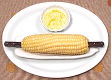

|
Corn on the CobNorth America | ||||
| Serves: Effort: Sched: DoAhead: |
4 side ** 45 min Yes |
Corn on the Cob, in a Corn Dish and fitted with a pair of Corn Horns, with butter and salt. You can't get more American than this. The corn dish holds a pool of butter so you can rotate the cob in it. | |||
|
ar ar ar ar |
|
Sweet Corn (1) Water, lots Butter (2) Salt |
A regular North American cob of Corn will have about 4-1/2 ounces of edible kernels. For a side or snack, 1 cob per person will do, but if its' the main dish, 2 cobs per person. Make: - (45 min)
|